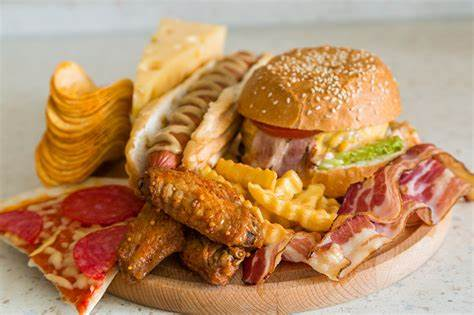

Taj Hotel
Good food will always welcome you back with a smile..
Fast Food

Cold Drink
Lunch
About
TAJ restaurant was established in 1987. The restaurant was introduced by Mr Tajudeen a.k.a. Taj and widely famous in the small town of Kuantan. We opened our very first branch in the heart of Kuantan and received the best restaurant award for our top-notch service, a variety of delicious dishes along with a generous amount of serving, in 1996. Our 'Nasi Biryani’ and Fish Head Curry are known as our signature dish until today.